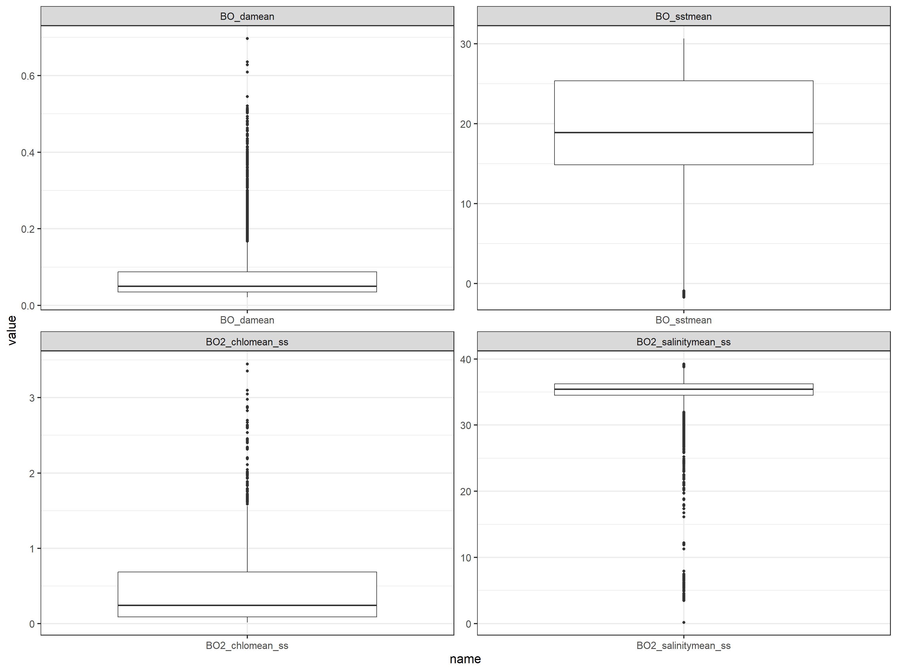
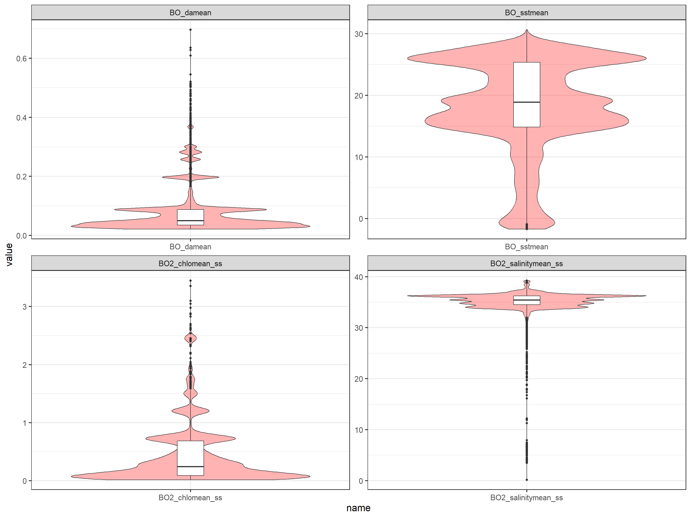
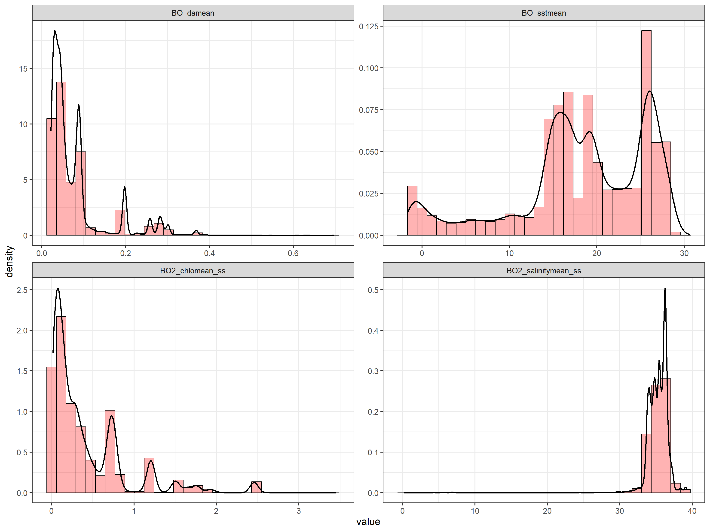
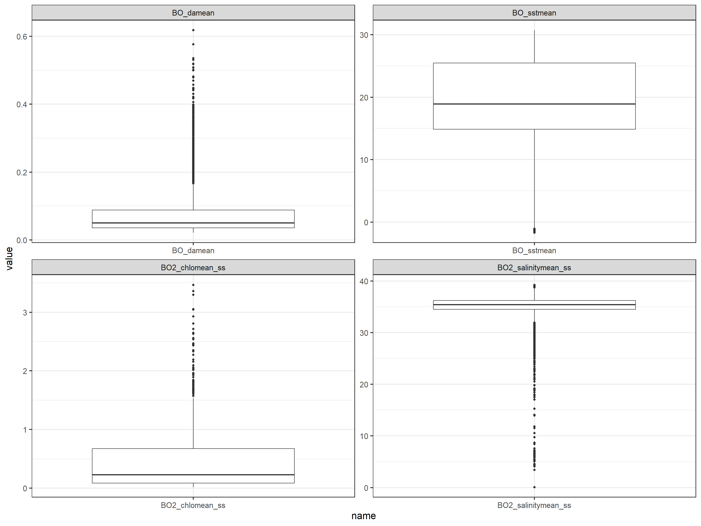
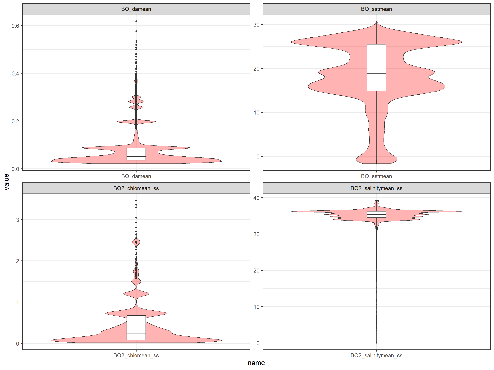
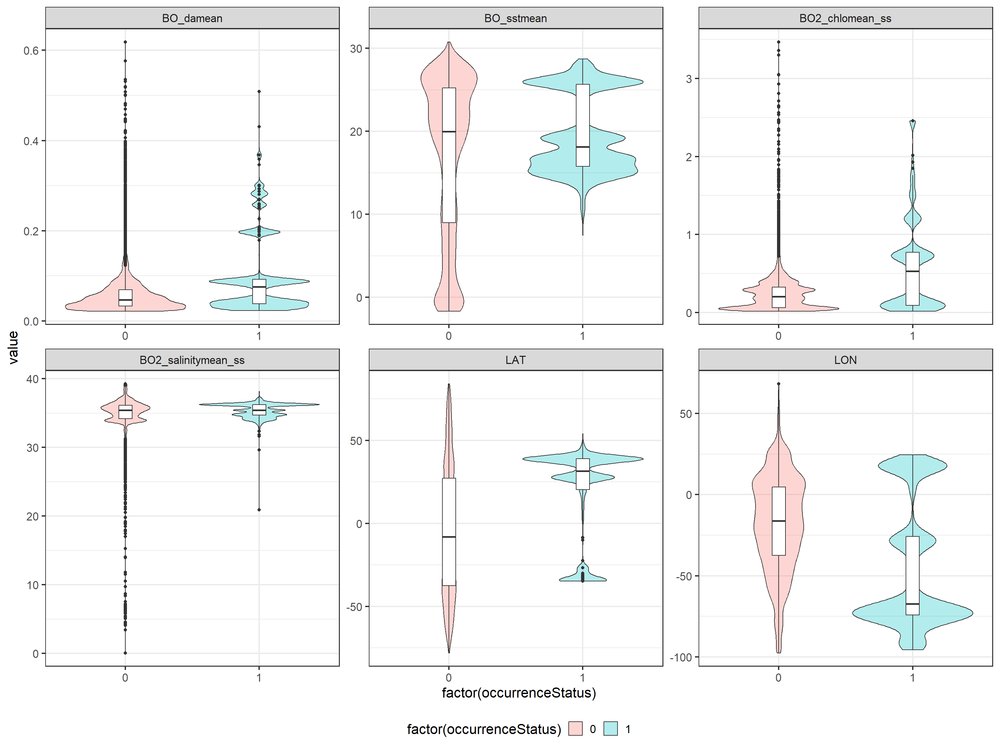

Chapter 4 Prepare the final dataset
In this chapter we first, extract environmental data associated to the presence/pseudo-absence data, we explore the data we got, we check correlation between variables and we calculate the Variance Inflation Factor (VIF) to make a selection of the variables we are going to use in the model.
First, we load a list of required libraries.
requiredPackages <- c(
#GENERAL USE LIBRARIES --------#
"here", # Library for reproducible workflow
"rstudioapi", # Library for reproducible workflow
#EXTRACT ENVIRONMENTAL DATA AND PLOTS
"sp", # spatial data
"raster", #spatial data
"dplyr",
"tidyr",
"ggplot2",
"ggcorrplot",
#CORRELATION ANALYSIS
"GGally", #correlation analysis
"HH" #calculate VIF
)We run a function to install the required packages that are not in our system and load all the required packages.
install_load_function <- function(pkg){
new.pkg <- pkg[!(pkg %in% installed.packages()[, "Package"])]
if (length(new.pkg))
install.packages(new.pkg, dependencies = TRUE)
sapply(pkg, require, character.only = TRUE)
}
install_load_function(requiredPackages)## here rstudioapi sp raster dplyr tidyr ggplot2
## TRUE TRUE TRUE TRUE TRUE TRUE TRUE
## ggcorrplot GGally HH
## TRUE TRUE TRUEWe define some overall settings.
# General settings for ggplot (black-white background, larger base_size)
theme_set(theme_bw(base_size = 16))4.1 Extract environmental data associated to species distribution data
Once we have prepared our species distribution data (occurrences and pseudo-absences) and the environmental rasters, we need to merge both sources of data. First, we load the objects created in previous sections:
# Load presence-absence data
load(here::here ("data", "outputs_for_modelling", "PAdata.RData"))
# Load environmental rasters
mylayers<-stack(here::here ("data", "env", "mylayers.tif"))Now we can extract the environmental data associated to each of the species data points using the function extract from the raster package. The method employed is bilinear that returns the interpolated value from the four nearest raster cells.
raster_ex <- raster::extract(x=mylayers, y=PAdata[,c("LON","LAT")], method="bilinear", na.rm=TRUE, df=T)
colnames(raster_ex)[-1]<-c("BO2_chlomean_ss", "BO2_salinitymean_ss", "BO_damean" ,"BO_sstmean")
head(raster_ex)## ID BO2_chlomean_ss BO2_salinitymean_ss BO_damean BO_sstmean
## 1 1 1.20410309 35.42666 0.1973854 16.99439
## 2 2 1.20410309 35.42666 0.1973854 16.99439
## 3 3 0.08455528 36.43070 0.0290000 25.52963
## 4 4 1.20410309 35.42666 0.1973854 16.99439
## 5 5 0.72283228 34.20426 0.0817736 15.21486
## 6 6 1.20410309 35.42666 0.1973854 16.99439We merge the presence/pseudo-absence data and the environmental data:
data <- cbind(PAdata, raster_ex)We can conduct some quick checks on the new dataset:
dim(data)## [1] 29806 10str(data)## 'data.frame': 29806 obs. of 10 variables:
## $ scientificName : chr "Thunnus alalunga" "Thunnus alalunga" "Thunnus alalunga" "Thunnus alalunga" ...
## $ LON : num 18.5 18.5 -76.6 18.5 -69.3 ...
## $ LAT : num -34.4 -34.4 28.4 -34.4 39.9 ...
## $ YEAR : num 2004 2004 2000 2000 2000 ...
## $ occurrenceStatus : num 1 1 1 1 1 1 1 1 1 1 ...
## $ ID : num 1 2 3 4 5 6 7 8 9 10 ...
## $ BO2_chlomean_ss : num 1.2041 1.2041 0.0846 1.2041 0.7228 ...
## $ BO2_salinitymean_ss: num 35.4 35.4 36.4 35.4 34.2 ...
## $ BO_damean : num 0.1974 0.1974 0.029 0.1974 0.0818 ...
## $ BO_sstmean : num 17 17 25.5 17 15.2 ...head(data)## scientificName LON LAT YEAR occurrenceStatus ID BO2_chlomean_ss
## 1 Thunnus alalunga 18.4972 -34.3569 2004 1 1 1.20410309
## 5 Thunnus alalunga 18.4972 -34.3569 2004 1 2 1.20410309
## 8 Thunnus alalunga -76.6000 28.4000 2000 1 3 0.08455528
## 10 Thunnus alalunga 18.4972 -34.3569 2000 1 4 1.20410309
## 11 Thunnus alalunga -69.3100 39.8800 2000 1 5 0.72283228
## 12 Thunnus alalunga 18.4972 -34.3569 2001 1 6 1.20410309
## BO2_salinitymean_ss BO_damean BO_sstmean
## 1 35.42666 0.1973854 16.99439
## 5 35.42666 0.1973854 16.99439
## 8 36.43070 0.0290000 25.52963
## 10 35.42666 0.1973854 16.99439
## 11 34.20426 0.0817736 15.21486
## 12 35.42666 0.1973854 16.99439summary(data)## scientificName LON LAT YEAR
## Length:29806 Min. :-97.805 Min. :-82.187 Min. :2000
## Class :character 1st Qu.:-69.221 1st Qu.:-29.933 1st Qu.:2001
## Mode :character Median :-28.967 Median : 24.006 Median :2002
## Mean :-31.118 Mean : 7.678 Mean :2003
## 3rd Qu.: 2.933 3rd Qu.: 38.250 3rd Qu.:2004
## Max. : 67.648 Max. : 89.418 Max. :2013
## NA's :14903
## occurrenceStatus ID BO2_chlomean_ss BO2_salinitymean_ss
## Min. :0.0 Min. : 1 Min. :0.01585 Min. : 0.1632
## 1st Qu.:0.0 1st Qu.: 7452 1st Qu.:0.08960 1st Qu.:34.5032
## Median :0.5 Median :14904 Median :0.24648 Median :35.4267
## Mean :0.5 Mean :14904 Mean :0.42505 Mean :35.2388
## 3rd Qu.:1.0 3rd Qu.:22355 3rd Qu.:0.68378 3rd Qu.:36.2156
## Max. :1.0 Max. :29806 Max. :3.44767 Max. :39.2467
## NA's :98 NA's :98
## BO_damean BO_sstmean
## Min. :0.02180 Min. :-1.705
## 1st Qu.:0.03505 1st Qu.:14.852
## Median :0.05039 Median :18.898
## Mean :0.07833 Mean :18.117
## 3rd Qu.:0.08800 3rd Qu.:25.373
## Max. :0.69655 Max. :30.663
## NA's :139 NA's :139The new dataset has 29806 rows and 10 columns, and there are 139 NA’s in the environmental dataset. We remove the points with NA’s:
data <- data %>%
dplyr::select (-YEAR) %>% #we remove year column because pseudoabsences miss this info
na.omit()We check again the dataset:
dim(data)## [1] 29661 9summary(data) ## scientificName LON LAT occurrenceStatus
## Length:29661 Min. :-97.805 Min. :-77.508 Min. :0.0000
## Class :character 1st Qu.:-69.330 1st Qu.:-29.933 1st Qu.:0.0000
## Mode :character Median :-28.946 Median : 24.088 Median :1.0000
## Mean :-31.138 Mean : 7.792 Mean :0.5024
## 3rd Qu.: 2.938 3rd Qu.: 38.242 3rd Qu.:1.0000
## Max. : 67.241 Max. : 83.660 Max. :1.0000
## ID BO2_chlomean_ss BO2_salinitymean_ss BO_damean
## Min. : 1 Min. :0.01585 Min. : 0.1632 Min. :0.02180
## 1st Qu.: 7416 1st Qu.:0.08954 1st Qu.:34.5100 1st Qu.:0.03504
## Median :14831 Median :0.24526 Median :35.4267 Median :0.05037
## Mean :14865 Mean :0.42527 Mean :35.2420 Mean :0.07833
## 3rd Qu.:22313 3rd Qu.:0.68457 3rd Qu.:36.2163 3rd Qu.:0.08800
## Max. :29806 Max. :3.44767 Max. :39.2467 Max. :0.69655
## BO_sstmean
## Min. :-1.705
## 1st Qu.:14.853
## Median :18.899
## Mean :18.120
## 3rd Qu.:25.374
## Max. :30.663The resulting dataset has 29661. We save this dataset in a local file to work on it in subsequent steps.
save(list="data", file="data/outputs_for_modelling/PAdata_with_env.RData")4.2 Exploratory plots of environmental variables
Before starting the modelling process, we are going to explore the individual variables in the dataset.
We can explore the distributions of each of the environmental variables by looking at the violin and boxplots and at the histograms and density plots as follows:
tmp <- data[, c("BO2_chlomean_ss","BO2_salinitymean_ss","BO_damean","BO_sstmean")]
tmp <- pivot_longer(data=tmp, cols=everything())
ggplot(data=tmp, aes(x=name, y=value)) +
geom_boxplot()+
facet_wrap(~name, scales="free")
ggplot(data=tmp, aes(x=name, y=value)) +
geom_violin(fill="red", alpha=0.3)+
geom_boxplot(width=0.1)+
facet_wrap(~name, scales="free")
ggplot(data=tmp, aes(x=value)) +
geom_histogram(aes(y= after_stat(density)), colour=1, fill="red", alpha=0.3)+
geom_density(lwd=1)+
facet_wrap(~name, scales="free")
4.3 Exploratory plots of environmental variables depending on species distribution data
To analyse if there are preferences for certain ranges of the environmental variables, we compare the distribution of the environmental variables for presence and pseudo-absence data:
tmp <- data[, c("LON", "LAT", "BO2_chlomean_ss","BO2_salinitymean_ss","BO_damean","BO_sstmean","occurrenceStatus")]
tmp <- pivot_longer(data=tmp, cols=!occurrenceStatus)
ggplot(data=tmp, aes(x=factor(occurrenceStatus), y=value, fill=factor(occurrenceStatus), group=factor(occurrenceStatus))) +
geom_violin(alpha=0.3)+
geom_boxplot(fill="white", width=0.1)+
facet_wrap(~name, scales="free")+
theme(legend.position = "bottom",legend.background = element_rect(fill = "white", colour = NA))
ggplot(data=tmp, aes(x=value, fill=factor(occurrenceStatus), group=factor(occurrenceStatus))) +
geom_density(lwd=1, alpha=0.3)+
facet_wrap(~name, scales="free")+
theme(legend.position = "bottom",legend.background = element_rect(fill = "white", colour = NA))
4.4 Correlation analysis
Some of the environmental variables can be correlated. The GGally package allows to easily produce pairplots of the variables and their correlation.
tmp <- data[, c("LON","LAT","BO2_chlomean_ss","BO2_salinitymean_ss","BO_damean","BO_sstmean")]
ggpairs(tmp) #this takes some minutes
A more detailed analysis of the potential correlations can be conducted using the package ggcorrplot:
mat <- cor(tmp, use="complete.obs")
p.mat <- cor_pmat(tmp)
ggcorrplot(mat, type = "lower", lab=T, p.mat = p.mat)4.5 Variance Inflation Factor (VIF)
Furthermore, multicollinearity in regression analysis can be explored using the VIF (Variance Inflation Factor). The value of the VIF statistics indicate the level of multicollinearity with the rest of the variables:
- VIF equal to 1 = variables are not correlated
- VIF between 1 and 5 = variables are moderately correlated
- VIF greater than 5 = variables are highly correlated
There are several packages in R that allows to calculate the VIF statistics. In this case we use the package HH:
# Select variables for VIF calculation
v.table <- data %>%
dplyr::select (BO2_salinitymean_ss, BO_sstmean, BO2_chlomean_ss, BO_damean)
# Get VIF results
out.vif <- vif(v.table)
sort(out.vif)## BO_sstmean BO2_salinitymean_ss BO2_chlomean_ss BO_damean
## 1.375837 1.493366 5.270639 5.478410We remove the variable that has the highest VIF value and we test again the multicollinearity:
v.table <- v.table %>%
dplyr::select (-BO_damean)
# Get new VIF results
out.vif <- vif(v.table)
sort(out.vif)## BO2_chlomean_ss BO2_salinitymean_ss BO_sstmean
## 1.136295 1.222233 1.300901Now all the variables have VIF values that are acceptable. So, we proceed to remove BO_damean (Diffuse attenuation coefficient at 490 nm). And save the selected variables for the next modelling stages:
data <- data %>% dplyr::select (-BO_damean)We save the dataset as our output for modelling.
save(list="data", file="data/outputs_for_modelling/PAdata_with_env.RData")